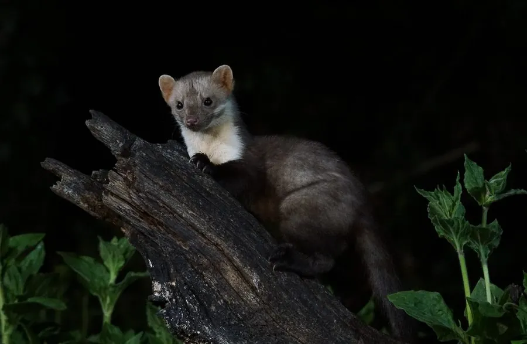

哺乳动物 · 动物界
石貂 Martes foina

欧亚大陆的小型貂类，喉部有白色斑块、毛色棕褐，善攀爬和跳跃，夜行独居，也常进入人类居所附近活动。
- 分类
- 门脊索动物门纲哺乳纲目食肉目科鼬科属貂属
- 栖息环境
- 森林、岩壁、河谷与村落附近
- 地理分布
- 欧洲、西亚和中亚，中国西北和西南地区有分布
- 保护级别
- IUCN 无危（LC）；中国国家二级保护动物
物种志
石貂体长 0.4–0.55 米，尾长 0.22–0.3 米，体重 1–2.5 kg。它的身体细长，被毛为棕褐至灰褐色，喉部和胸部有一块白色至浅黄色的斑块，形状不规则；头部小而尖，耳朵圆，四肢短，爪可半伸缩，尾巴蓬松。
石貂分布于欧洲、西亚和中亚，从西班牙、斯堪的纳维亚到俄罗斯、中东，中国西北和西南也有分布，栖息于森林、岩壁、河谷和村落附近。它以鼠类、鸟类、鸟卵、昆虫、蛙类和果实为食，善攀爬和跳跃，常在夜间单独活动，也会在白天出现在人类居所附近寻找食物。雌性有延迟着床现象，妊娠期约 220–240 天，每胎 2–5 仔。石貂适应力较强，种群总体稳定，但中国境内数量较少，被列为国家二级保护动物。
形态与习性
- 食性鼠类、鸟类、鸟卵、昆虫、蛙类与果实
- 体长0.4–0.55 m，尾长 0.22–0.3 m
- 体重1–2.5 kg
- 寿命野外约 8–10 年
- 繁殖有延迟着床，妊娠期约 220–240 天，每胎 2–5 仔
- 活动节律夜间单独活动
- 喉斑喉部有白色至浅黄色的不规则斑块
趣味知识
- 石貂喉部有一块白色斑块，是区分貂类的重要特征。
- 它善攀爬和跳跃，常在岩壁和树上活动。
- 石貂会进入村落和城市边缘寻找食物。
- 中国境内石貂数量较少，被列为国家二级保护动物。